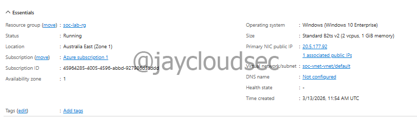
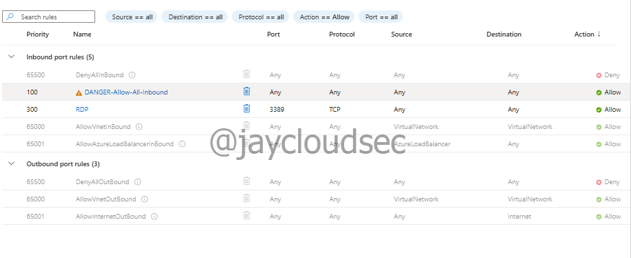
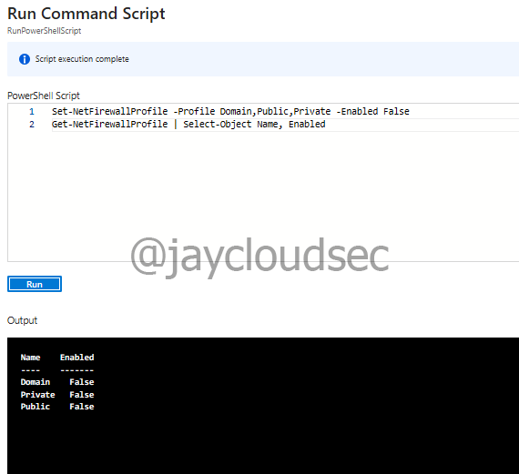
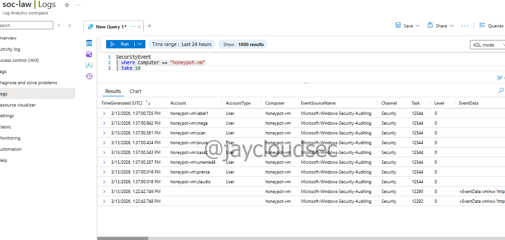
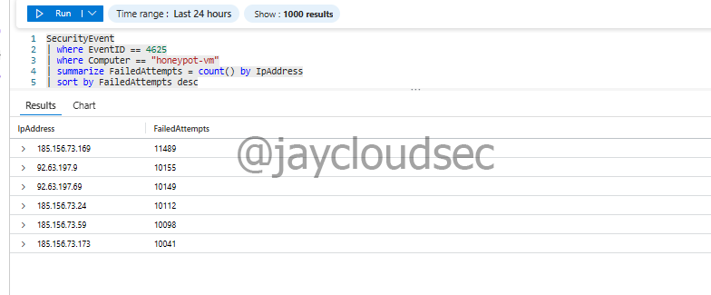
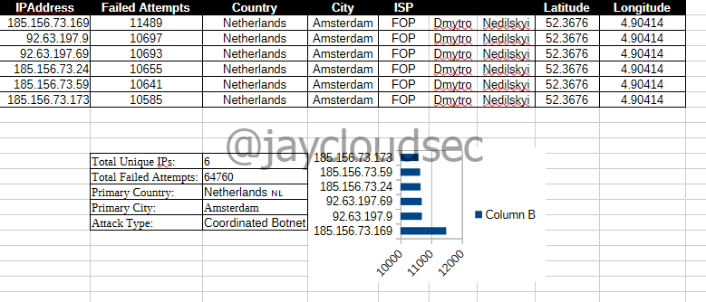
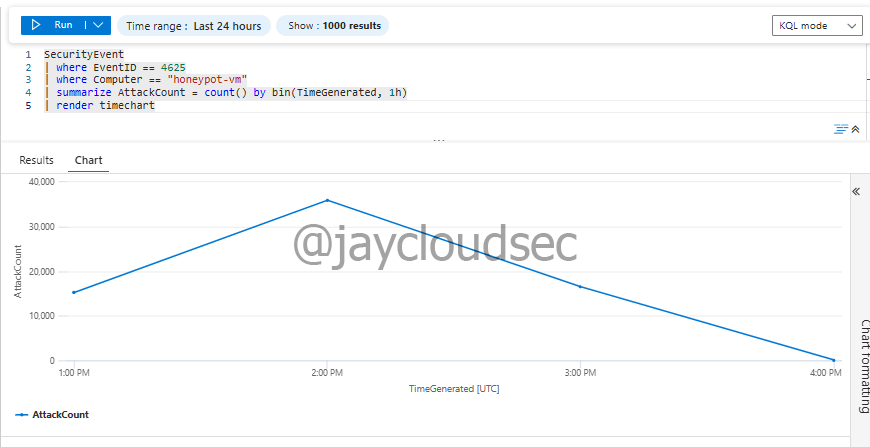

Lab 03 — Honeypot Threat Intelligence
Overview
This write-up documents a real-world threat intelligence investigation conducted using a deliberately exposed honeypot virtual machine in Microsoft Azure. Unlike the simulated attack activity in Labs 01 and 02, every data point in this investigation came from actual attackers on the internet.
Within hours of deployment, the honeypot attracted over 64,760 failed login attempts. Analysis of the attack data revealed a coordinated botnet operating from Netherlands-based infrastructure — all six top attacking IPs traced back to the same autonomous system, the same ISP, and the same physical coordinates in Amsterdam.
Environment
The following architecture was used for this investigation:
Internet (Global Attackers)
↓
Azure Public IP (No NSG Restrictions)
↓
Honeypot Windows VM (RDP Exposed)
↓
Windows Security Event Logs
↓
Azure Monitor Agent
↓
Log Analytics Workspace
↓
Microsoft SentinelTechnologies used:
- Microsoft Azure
- Microsoft Sentinel
- Windows Virtual Machine (Honeypot)
- Azure Monitor Agent
- Log Analytics Workspace
- KQL (Kusto Query Language)
- IP Geolocation API (ip-api.com)
- LibreOffice Calc
Honeypot Configuration
A honeypot is a deliberately vulnerable system designed to attract attackers and collect threat intelligence. The VM was configured with maximum exposure to generate real-world attack data.
VM configuration:
- VM Name: honeypot-vm
- Region: Australia East
- Operating System: Windows 10 Enterprise 22H2
- VM Size: Standard B2ts v2 (2 vCPU, 1 GB memory)
- Public IP: Enabled
- Auto-shutdown: Disabled
Intentional exposure settings:
- Network Security Group configured with Allow All inbound rule (Priority 100, any source, any port, any protocol)
- Windows Firewall disabled across all profiles (Domain, Private, Public)
- RDP port 3389 fully exposed to the internet
- No authentication restrictions
Set-NetFirewallProfile -Profile Domain,Public,Private -Enabled False
Get-NetFirewallProfile | Select-Object Name, Enabled
Honeypot VM deployed in Azure with public IP and maximum exposure configuration

Network Security Group configured to allow all inbound traffic — intentional honeypot exposure

All three Windows Firewall profiles disabled to maximize attack surface
Data Collection
The existing Data Collection Rule from previous lab projects was reused to collect Windows Security Events. After waiting 10-15 minutes for log ingestion, security events were verified using the following query:
SecurityEvent
| where Computer == "honeypot-vm"
| take 10
Security events confirmed flowing from the honeypot VM into Microsoft Sentinel
Attack Volume Analysis
Failed login attempts were extracted using Windows Event ID 4625. The following query identified the top attacking IP addresses:
SecurityEvent
| where EventID == 4625
| where Computer == "honeypot-vm"
| summarize FailedAttempts = count() by IpAddress
| sort by FailedAttempts desc
| take 20Top 6 attacking IP addresses:
| IP Address | Failed Attempts |
|---|---|
| 185.156.73.169 | 11,489 |
| 92.63.197.9 | 10,697 |
| 92.63.197.69 | 10,693 |
| 185.156.73.24 | 10,655 |
| 185.156.73.59 | 10,641 |
| 185.156.73.173 | 10,585 |
Total: 64,760+ failed login attempts across all sources.

Top attacking IP addresses ranked by failed login attempt volume
Targeted Credential Analysis
The most commonly targeted usernames were extracted to identify the attack pattern:
| Username | Attempts | Significance |
|---|---|---|
| administrator | 1,040 | Default Windows admin account |
| user | 981 | Generic dictionary entry |
| admin | 926 | Common default credential |
| administrador | 303 | Spanish — indicates multilingual wordlist |
| test | 222 | Common test account name |
| scanner | 190 | Targets misconfigured scanning accounts |
The presence of administrador (Spanish) confirms the attacker is using a multilingual dictionary wordlist — a standard characteristic of automated botnet credential attacks targeting systems globally.
Threat Intelligence Enrichment
Attacker IPs were exported to CSV and enriched using the ip-api.com geolocation API. For each IP, the following data was collected: country, city, ISP, organization, latitude/longitude, and AS number.
Example geolocation data for the top attacking IP (185.156.73.169 — 11,489 attempts):
{
"country": "The Netherlands",
"city": "Amsterdam",
"isp": "FOP Dmytro Nedilskyi",
"org": "IP Kiktev Nikolay Vladimirovich",
"as": "AS211736 FOP Dmytro Nedilskyi",
"lat": 52.3676,
"lon": 4.90414
}
IP geolocation enrichment data compiled in LibreOffice Calc for all attacking IPs
Key Finding: Coordinated Botnet
After enriching all six top attacking IPs, a critical pattern emerged — every IP shared identical geolocation data:
| Attribute | Value |
|---|---|
| Country | Netherlands |
| City | Amsterdam |
| ISP | FOP Dmytro Nedilskyi |
| AS Number | AS211736 |
| Coordinates | 52.3676, 4.90414 |
This is not a coincidence. Six different IP addresses producing identical geolocation and ASN data is the signature of a coordinated botnet attack — a single threat actor operating multiple IPs from the same infrastructure to distribute the attack load and evade simple IP-based blocking. Blocking one IP would have no meaningful impact; the remaining five would continue at full volume.
This finding demonstrates why IP reputation alone is insufficient as a defense. The correct response is to block the entire ASN range at the network perimeter.
Attack Timeline
Attack volume was visualized over time using the following KQL query:
SecurityEvent
| where EventID == 4625
| where Computer == "honeypot-vm"
| summarize AttackCount = count() by bin(TimeGenerated, 1h)
| render timechartTimeline findings:
- Attacks began within hours of honeypot deployment
- Peak volume reached approximately 37,000 attempts per hour around 2:00 PM UTC
- Sustained high-volume activity lasted approximately 3 hours
- Gradual decrease from peak consistent with automated scanning behavior

Attack volume over time — peak of ~37,000 attempts per hour followed by gradual decline
The rapid onset and consistent volume pattern confirms fully automated botnet scanning. Human-operated attacks show irregular timing and variable intensity — this data shows neither.
Industry Context
The findings from this investigation align directly with published threat intelligence on internet-facing RDP exposure:
- 90% of exposed RDP servers are attacked within 24 hours of deployment — this honeypot was attacked within hours
- Amsterdam is a well-documented hosting location for attack infrastructure due to permissive hosting providers
- Default credential targeting (administrator, admin) is the primary attack vector for automated credential attacks globally
- Botnet operators routinely distribute attacks across multiple IPs from the same infrastructure to bypass per-IP rate limiting
MITRE ATT&CK Mapping
| Technique | ID | Observation |
|---|---|---|
| Brute Force: Password Guessing | T1110.001 | 64,760+ failed login attempts against default credentials |
| Brute Force: Password Spraying | T1110.003 | Multiple usernames targeted across all attacking IPs |
| Valid Accounts | T1078 | Attack focused on default admin account names |
| Remote Services: RDP | T1021.001 | All attacks conducted via exposed RDP port 3389 |
Analyst Conclusion
This investigation produced actionable threat intelligence from real attack data. The coordinated botnet finding, the credential targeting patterns, and the timeline analysis together form a complete picture of the threat actor's behavior and infrastructure.
In a production SOC environment, the immediate next steps following this investigation would be:
- Block AS211736 at the network perimeter — all six IPs originate from this ASN
- Submit all six IPs to AbuseIPDB for public threat intelligence contribution
- Update NSG rules to restrict RDP access to known IP ranges only
- Enable MFA on all accounts — credential stuffing is ineffective against MFA
- Rename or disable the default Administrator account to remove the primary attack target
- Create a Sentinel watchlist for AS211736 to flag future activity from the same infrastructure
- Escalate the botnet infrastructure finding to L2 for threat hunting across other monitored assets
The broader takeaway: any internet-facing system without network restrictions will be attacked within hours. The question is not whether attackers will find it — they will — but whether the environment is instrumented to detect and respond when they do.